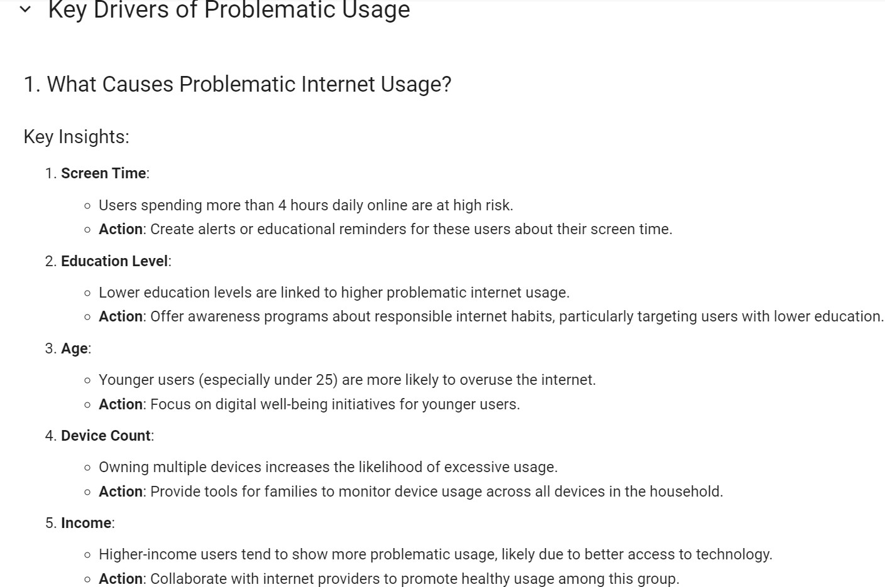
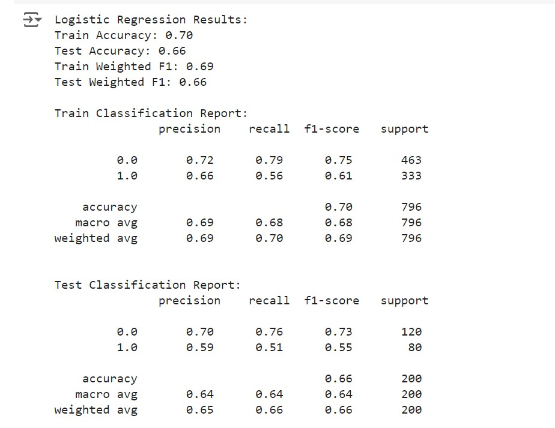

✔About
- The project aimed to leverage machine learning to analyze children's physical activity and fitness data to identify early signs of problematic internet use and provide actionable insights for promoting healthier digital habits.
- Utilized TS Fresh for feature selection, feature engineering, and advanced data cleaning to prepare the dataset for machine learning models.
- After testing Random Forest, KNN, SVM, and Logistic Regression, Logistic Regression proved to be the most effective model, obtaining a delta of 0.04 and 70% train and 66% test accuracy.
- Highlighted strong predictors of problematic internet usage, including multiple devices, younger age, lower educational attainment, high screen time, and higher income.
Project Link
🔗 Link →
✔Skills Showcased
Data Cleaning
Data Preprocessing
Exploratory Data Analysis
Data Modeling
Python
✔Results

Best Model
